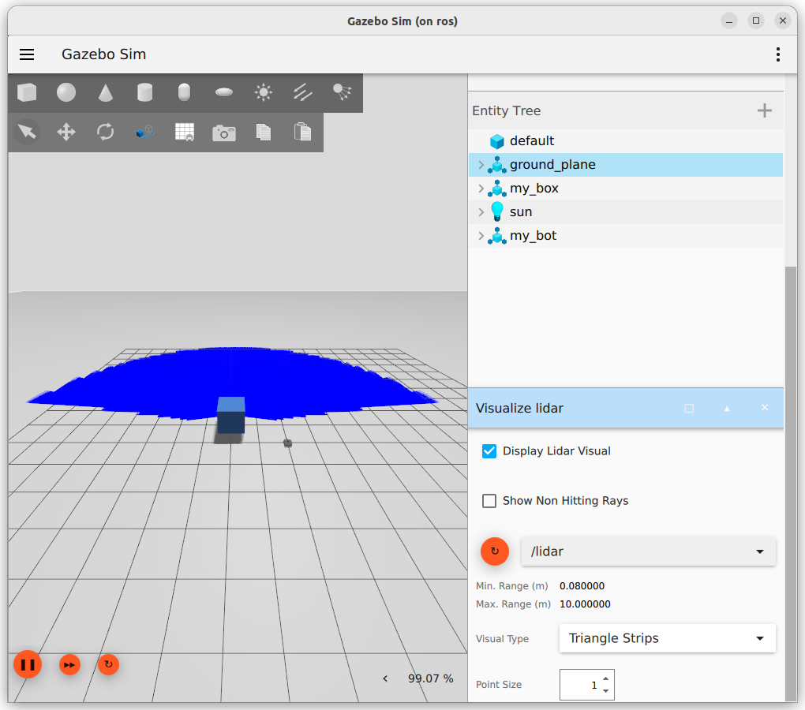

LIDAR
Gazebo
Add sensor plugin to world
| add sensor plugin to world |
|---|
| <plugin
filename="gz-sim-sensors-system"
name="gz::sim::systems::Sensors">
<render_engine>ogre2</render_engine>
</plugin>
|
| sensor |
|---|
| <sensor name='gpu_lidar' type='gpu_lidar'>
<topic>lidar</topic>
<update_rate>10</update_rate>
<lidar>
<scan>
<horizontal>
<samples>640</samples>
<resolution>1</resolution>
<min_angle>-1.396263</min_angle>
<max_angle>1.396263</max_angle>
</horizontal>
<vertical>
<samples>16</samples>
<resolution>1</resolution>
<min_angle>-0.261799</min_angle>
<max_angle>0.261799</max_angle>
</vertical>
</scan>
<range>
<min>0.08</min>
<max>10.0</max>
<resolution>0.01</resolution>
</range>
</lidar>
<alwaysOn>1</alwaysOn>
<visualize>true</visualize>
</sensor>
|
| gz |
|---|
| gz topic --echo -t /lidar
|

ROS
cli
| ros2 run ros_gz_bridge parameter_bridge /lidar@sensor_msgs/msg/LaserScan[gz.msgs.LaserScan
#
|
bridge file
| - ros_topic_name: "/lidar"
gz_topic_name: "/lidar"
ros_type_name: "sensor_msgs/msg/LaserScan"
gz_type_name: "gz.msgs.LaserScan"
direction: GZ_TO_ROS
|
launch
| imu_bridge.launch.py |
|---|
| from ament_index_python.packages import get_package_share_directory
from launch import LaunchDescription
from launch_ros.actions import Node
from pathlib import Path
PKG_BRINGUP = 'turtlebot_bringup'
BRIDGE_CONFIG = "gz_bridge.yaml"
CONFIG_FOLDER = "config"
def generate_launch_description():
ld = LaunchDescription()
bridge_file = Path(get_package_share_directory(PKG_BRINGUP)) \
.joinpath(CONFIG_FOLDER) \
.joinpath(BRIDGE_CONFIG) \
.as_posix()
ros_gz_bridge = Node(
package="ros_gz_bridge",
executable="parameter_bridge",
arguments=[
'--ros-args',
'-p',
f"config_file:={bridge_file}"
],
parameters=[
{'use_sim_time': True},
{'qos_overrides./imu.publisher.reliability': 'best_effort'}
],
)
ld.add_action(ros_gz_bridge)
return ld
|